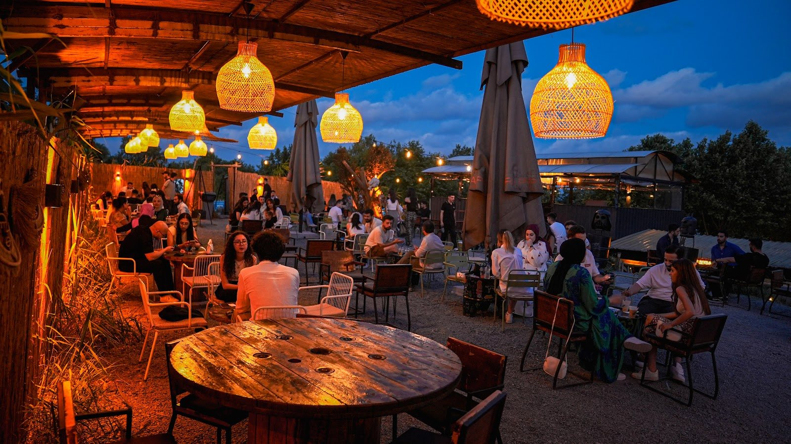
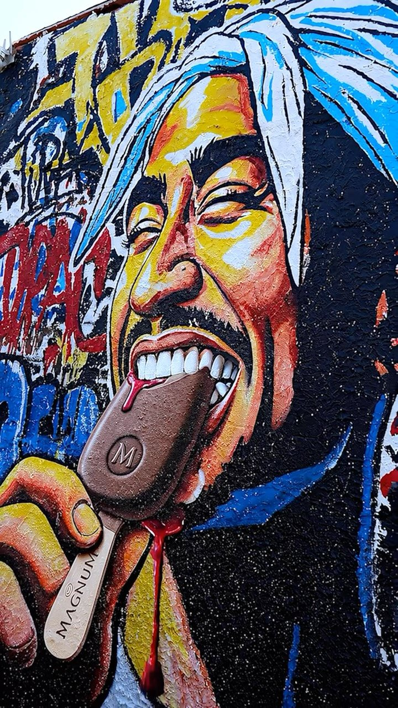

Ambarlı, Avcılar
Kahveye bir de
sohbet ekle.
Günün ışığı, akşamın sıcaklığı.
Bir fincanın etrafında buluşalım.


Biraz renk, bolca sohbet.
Kendi ritminde
bir mola.
Renkli duvarların önünde bir kahve. Terasta arkadaşlarla uzayan bir akşam. Harappe’de buluşmak için büyük bir plana gerek yok.
İskele Caddesi’nde, günün temposundan biraz uzaklaşmak istediğinde buradayız.
Yol tarifi alHava serin, sohbet sıcak.
Akşama da
kalırsın.
Işıklar yandığında terasın havası değişir. Uzun bir sohbetin yanına sıcak bir kahve söyle, biraz daha kal.
Instagram’dan son paylaşımlarGoogle yorumları
Uğrayanlardan.
Google yorumu ★★★★★
“Çalışan arkadaşlar ilgililer, akşam haftasonu çok kalabalıktı sadece”Pınar D.Yorumun tamamı
Google yorumu ★★★★☆
“Ortam güzel,yaş ortalaması genç,enerjik ve cool mekan.”İnanç C.Yorumun tamamı
Google yorumu ★★★★☆
“Yaz akşamı arkadaşlarla mekan yer için uygun.”Yağmur V.Yorumun tamamı
Google’da paylaşılan yorumlardan kısa alıntılar. Puan ve yorum sayısı 2 Kasım 2026 tarihinde kontrol edilmiştir.
Adres
Ambarlı Mahallesi, İskele Caddesi No: 49Avcılar / İstanbul
Çalışma saatleri
12.00 – 02.00
Özel günlerdeki değişiklikler için ziyaret öncesinde işletmeden bilgi alabilirsiniz.